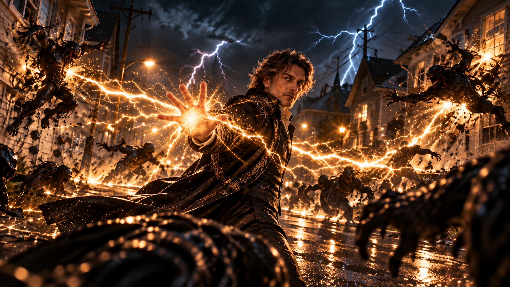
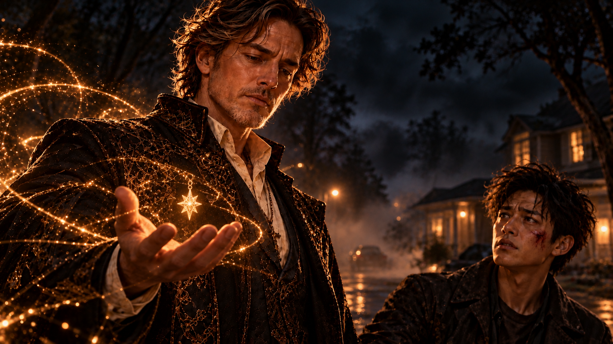
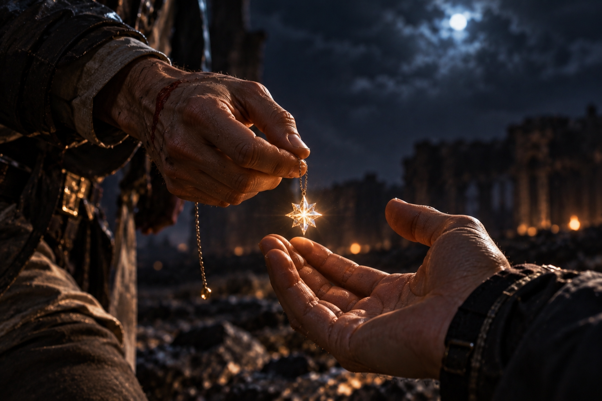

WHITE MAGIC ART STUDIO
序章
血祭封印
十五年前，美國某座郊區小鎮。
深夜，一道閃電劃破天空，慘白的光芒瞬間照亮整條街道。
「詹姆斯！後面！」
詹姆斯猛然回頭，三隻黑影已經撲到眼前。
他迅速抬起右手，掌心迸出耀眼的雷光。三道閃電幾乎同時擊中黑影，將牠們撞向街道兩側的房屋。碎石與玻璃四散飛濺，詹姆斯卻連喘息的時間都沒有。
他轉身揮手，雷電沿著濕透的柏油路疾速竄去，又將一排惡魔擊倒。

然而，更多黑影正從四面八方湧來。
屋頂、巷口、破碎的窗戶，甚至連下水道都不斷有惡魔爬出。牠們彷彿永遠殺不完，前一批才剛倒下，下一批便踩著同伴的身體繼續逼近。
「牠們到底有多少？」
雷退到哥哥身旁，懸浮在肩側的黑色菱形水晶高速旋轉。一道金色雷光從晶體中央射出，將迎面撲來的惡魔擊飛。
「不知道。」詹姆斯喘著氣，目光掃過四周，「但情況不對勁。」
這裡原本是一座寧靜的小鎮，如今街道上只剩燃燒的房屋、翻覆的車輛，以及不斷蔓延的黑霧。
更奇怪的是，整座城鎮竟然聽不見任何居民的聲音。
沒有求救，沒有哭喊，甚至沒有警笛。
所有人彷彿在短短幾分鐘內憑空消失了。
就在這時，一道紫色閃電從天而降。
雷光散去後，傑西半跪在街道中央，神情凝重。
「各位，我們有麻煩了。」
雷忍不住苦笑。
「你現在才發現？」
「我不是說這些惡魔。」傑西站起身，「是召喚牠們的東西。」
詹姆斯立刻轉向他。
「你找到源頭了？」
「西邊。」
「是什麼？」
傑西沒有回答。
因為就在那一刻，遠方傳來一聲震耳欲聾的巨響。
三人同時望向西方。
籠罩小鎮的黑霧開始翻湧，像是受到某種力量牽引，瘋狂地向天空匯聚。濃霧逐漸形成巨大的漩渦，連厚重的雲層都被撕開了一道裂縫。
雷仰起頭，原本準備好的玩笑話全都卡在喉嚨裡。
有東西正從裂縫深處緩緩降下。
首先出現的是一雙巨大的焦黑羽翼，展開時幾乎遮住半片夜空。
接著，一具難以辨認形貌的身軀浮現在黑暗之中。
牠懸停在城鎮上方，沒有咆哮，也沒有立刻發動攻擊，只是低頭俯視著地面上的三人。
詹姆斯的呼吸微微一滯。
那張臉有著近似人類的輪廓，卻又帶著一種令人不寒而慄的陌生感。
「不可能……」
雷肩旁的水晶忽然停止旋轉。
「哥，那到底是什麼？」
傑西向後退了一步。
「我從來沒有感受過這種力量。」
詹姆斯緊盯著天空中的身影。
他知道那是什麼，只是不願相信自己竟然會在這裡遇見牠。
「魔神。」
雷猛然轉頭。
「你說什麼？」
「那是魔神。」
話音剛落，天空中的怪物猛然張開雙翼。
黑霧頓時如巨浪般傾瀉而下。
「散開！」
三人同時躍離原地。下一秒，整條街道轟然崩裂，柏油路面被掀起，附近的車輛也在衝擊中翻滾出去。
詹姆斯落在一輛翻覆的汽車旁，立刻張開雙手。
銀白色電流從他腳下向外延伸，沿著街道迅速奔馳，交錯勾勒出一座巨大的六芒星。
「雷！」
「知道了！」
雷一躍而起，黑色菱形水晶隨之升上半空。四面八方的金色雷霆匯聚而來，全部灌入晶體中央。
他咬緊牙關，將力量推向極限。
「給我下去！」
一道巨大的雷柱從天而降，正面擊中魔神。
詹姆斯抓住這短暫的機會，雙掌猛然合攏。
地面上的六芒星瞬間亮起，六道雷柱拔地而起，彼此連結，形成一座巨大的雷電牢籠，將魔神困在其中。
黑暗深處傳出刺耳的尖嘯，彷彿有無數聲音同時發出怒吼。
雷忍不住摀住耳朵。
「成功了？」
「還沒有。」
詹姆斯的目光始終沒有離開結界。
此時細小的裂痕出現在雷光之上。
緊接著，第二道、第三道……
「這座結界撐不了多久。」
傑西趕到他身旁。
「那就趁現在趕快消滅牠！」
詹姆斯轉頭看了他一眼。
傑西的表情漸漸僵住。
「對……我們消滅不了牠……」
詹姆斯沒有回答。
雷落回地面，急忙走向兩人。
「一定有辦法的！」
結界再次劇烈震動，其中一道雷柱開始崩裂。
詹姆斯抬頭望著魔神，沉聲說道：
「有。翼。」
雷怔住了。
傑西也立刻明白他的意思。
「你是說……只有『翼』才能真正壓制牠？」
「沒錯。」
「可是那一位根本不在這裡！」
「我知道。」
「那我們現在怎麼辦？」
詹姆斯沉默片刻。
「還有另一個。」
雷原本焦急的神情瞬間凝固。
他慢慢轉向哥哥，臉色變得蒼白。
「不……」
詹姆斯沒有看他。
「你不要告訴我，你在想那個孩子。」
傑西疑惑地望向兩人。
「什麼孩子？詹姆斯……你不要跟我說是他……」
雷臉色更加凝重。
「他才兩歲！」
詹姆斯終於轉過頭。
「我知道。」
「他連自己是誰都不知道！」
「所以不是現在。」
雷愣了一下。
詹姆斯重新望向天空。魔神正在不斷撞擊雷電牢籠，結界上的裂痕越來越密集。
「那你到底想做什麼？」
詹姆斯沒有立刻回答。
他的目光越過滿目瘡痍的街道，彷彿看見了很遠以外的地方。
一棟熟悉的房子。
餐桌旁散落的玩具。
一個總是睡不安穩的小男孩。
還有那雙漂亮的藍色眼睛。
詹姆斯忽然笑了。
「我原本以為，自己還有很多時間。」
「哥？」
「還有很多事情想教他。」
他低下頭，攤開掌心。
細小的金色電光在手中跳動，沒有戰場上的狂暴，反而像夜空裡安靜閃爍的星星。
「我想帶他去看真正的星空，告訴他那些星星叫什麼名字。」
光點逐漸聚集，開始凝結成某種形狀。
「我想看他第一次上學，第一次喜歡上一個女孩……」
雷的眼眶紅了。
「哥，別說了。」
「還想知道，他長大以後會選擇什麼樣的人生。」
詹姆斯望著掌心。
那裡已經出現了一顆八角星形的水晶鏈墜，散發著柔和的光芒。

「我甚至不知道，他長大以後會不會喜歡我這個爸爸。」
他苦笑了一下。
「希望會吧。」
詹姆斯轉身，將水晶遞給傑西。
「拿著。」
傑西沒有伸手。
「詹姆斯……」
「幫我交給瑞秋。」
「你自己去。」
「傑西。」
詹姆斯的語氣並不和緩，卻讓他再也說不出拒絕的話。
水晶鏈墜被放進傑西掌心，還帶著微微的溫度。
「只要她看到這個，就會知道該怎麼做。」
傑西低頭看著水晶鏈墜，終於明白了詹姆斯的打算。
「不行。」
詹姆斯沒有說話。
「你不能這麼做！」
雷急忙看向他。
「他到底要做什麼？」
傑西艱難地開口。
「血祭封印。」
雷皺起眉頭。
「那是什麼？」
「一種禁術。」
「然後呢？」
傑西沉默了。
詹姆斯替他回答。
「我可以把魔神封進自己的身體。」
雷怔怔地望著哥哥。
「那你呢？」
詹姆斯沒有回答。
但雷已經明白了。
「……不。」
結界再度傳來巨響。
大片雷光碎裂，魔神的一隻手已經穿過牢籠。
雷衝上前，一把抓住詹姆斯的手臂。
「不行！我們一起走！」
「雷。」
「一定還有別的方法！」
「沒有時間了。」
「那我們就一起想！」
「雷！」
「你老婆還在等你！」
詹姆斯的眼神顫了一下。
雷死死抓著他。
「你還有三個孩子！最小的甚至還沒出生！」
「我知道。」
「那你為什麼還要——」
「我知道！」
詹姆斯突然提高音量。
雷愣住了。
他從來沒有聽過哥哥用這樣的語氣對自己說話。
詹姆斯低下頭，深深吸了一口氣。
「……我知道。」
再次開口時，他的聲音已經恢復平靜。
「所以我才害怕。」
雷的眼淚終於落了下來。
詹姆斯伸手抱住弟弟。
雷起初僵在原地，下一秒，卻緊緊抓住哥哥的衣服，像小時候害怕失去什麼東西時那樣。
「不要……」
詹姆斯閉上眼睛。
「幫我照顧他們。」
雷拚命搖頭。
「你自己照顧。」
「雷，聽我說。」
詹姆斯輕輕拍了拍弟弟的背。
「照顧瑞秋，還有安娜。」
「不要……」
「克里斯也是。」
他停頓了一下。
最後那個名字，說出口時格外艱難。
「還有柴克。」
雷的手微微顫抖。
「尤其是他。」
詹姆斯稍稍鬆開擁抱，望著弟弟的眼睛。
「如果有一天，他開始問我是誰……」
遠處傳來結界崩裂的巨響。
詹姆斯卻沒有回頭。
「不要告訴他我是英雄。」
雷抬起滿是淚水的臉。
「告訴他……」
詹姆斯想了想，露出淡淡的笑容。
「我只是他爸爸。」
雷再也說不出話。
詹姆斯最後拍了拍他的肩膀。
「還有，謝謝你當我弟弟。」
「哥……」
「還有，對不起。」
金色雷光突然從詹姆斯掌心爆發，一股強大的力量將雷整個推了出去。
「詹姆斯！」
傑西急忙接住他。
「走！」
「不！放開我！」
雷瘋狂掙扎，試圖衝回哥哥身邊。
「傑西！放開我！」
傑西咬緊牙關，紫色電流逐漸纏繞兩人的身體。
「對不起。」
「不要——！」
紫光驟然亮起。
在消失之前，雷最後看見的，是哥哥獨自站在漫天黑霧之中。
「哥——！」
兩人的身影消失了。
詹姆斯緩緩放下手。
四周只剩雷鳴與黑霧翻湧的聲音。
他知道，自己已經沒有退路。
雷電牢籠終於承受不住魔神的力量，轟然崩潰。
巨大的黑色羽翼再次展開，濃霧鋪天蓋地地壓向整座城鎮。
詹姆斯抬起頭，沒有後退。
他腳下的六芒星重新亮起，一道道雷光沿著地面匯聚，纏繞上他的身體。
魔神朝他俯衝而來。
詹姆斯閉上眼睛。
這一刻，他想起的不是眼前的戰場。
而是一個兩歲大的孩子，正跌跌撞撞地朝自己跑來。
那孩子笑得很開心。
他蹲下身，張開雙手。
「爸爸！」
詹姆斯的嘴角微微揚起。
當他再次睜開眼睛，魔神已經近在眼前。
他雙掌合十。
剎那間，整座城鎮的雷電彷彿都回應了他的召喚，從四面八方向他匯聚而來。
魔神的身體猛然停住。
原本不斷向外擴散的黑霧開始倒流，被一股無法抗拒的力量拉向詹姆斯。
魔神劇烈掙扎，試圖掙脫束縛。
但封印已經開始。
詹姆斯的雙腳陷進破碎的地面，強大的力量沿著雙臂不斷湧入，幾乎讓他無法站穩。
他咬緊牙關，始終沒有鬆手。
「拉比……」
詹姆斯仰起頭。
雷光與黑暗交錯，映在他的眼睛裡。
「如果這就是祢要我走的路……」
他再次閉上眼睛。
挺著大肚子的瑞秋的笑容浮現在腦海。
接著是克里斯。
最後，是柴克。
「求祢……」
他的聲音逐漸被雷鳴掩蓋。
「幫助他。」
遠方，傑西手中的八角星水晶驟然亮起。
同一時間，耀眼的白光吞沒了整座小鎮。
不知道過了多久，雷聲終於停了。
夜色重新籠罩大地。
曾經滿是惡魔的街道，只剩下滿地碎石與焦黑的痕跡。
魔神消失了。
惡魔也不見了。
而詹姆斯，再也沒有出現。
街道中央，只留下一座巨大的六芒星，深深烙印在燒焦的地面上。
微弱的金色電流仍在紋路之間流動。
一下。
又一下。
像某個尚未停止的心跳。
